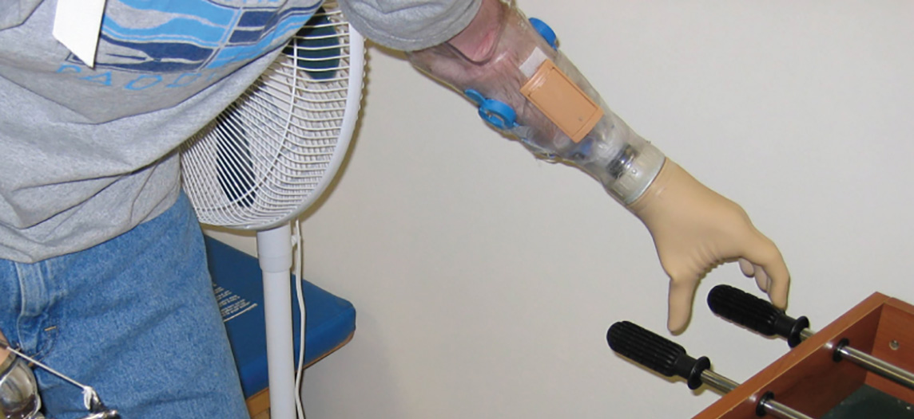
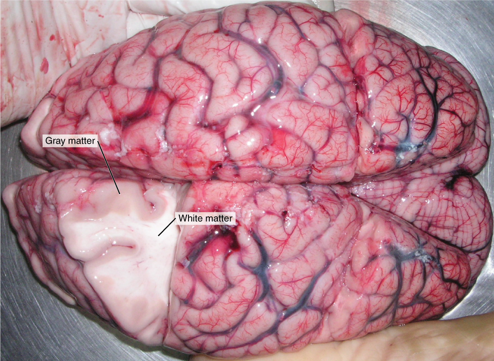
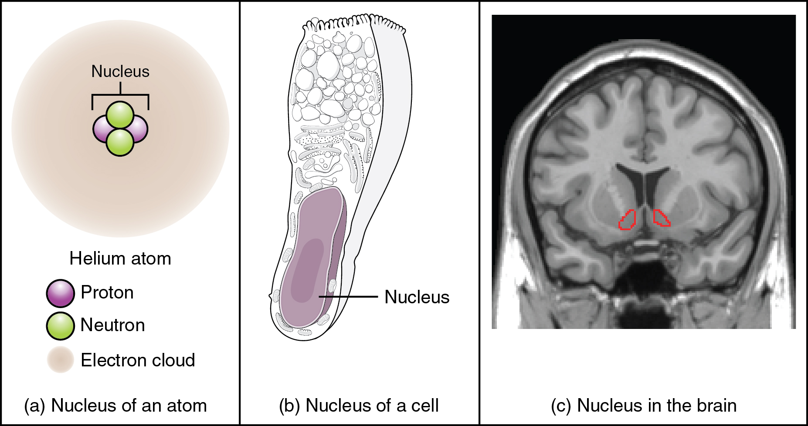
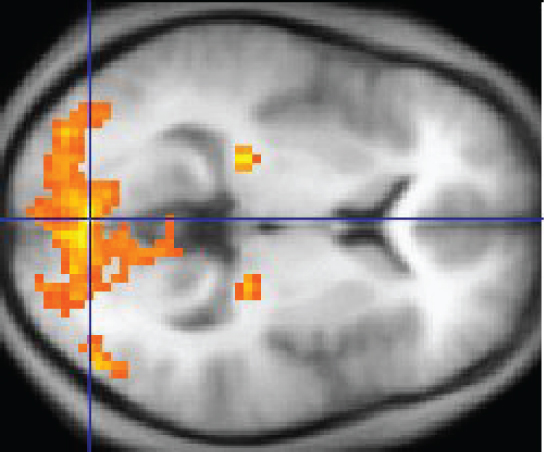
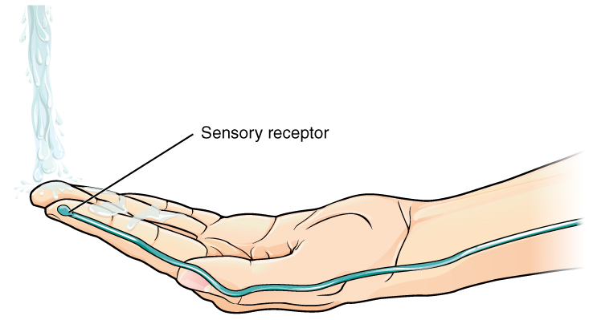
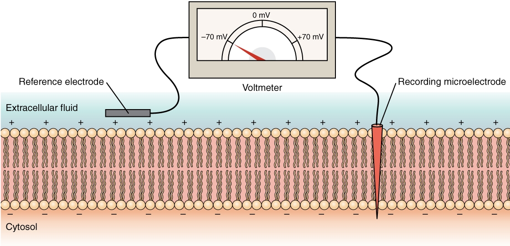

- After studying this chapter, you will be able to:
- Name the major divisions of the nervous system, both anatomical and functional
- Describe the functional and structural differences between gray matter and white matter structures
- Name the parts of the multipolar neuron in order of polarity
- List the types of glial cells and assign each to the proper division of the nervous system, along with their function(s)
- Distinguish the major functions of the nervous system: sensation, integration, and response
- Describe the components of the membrane that establish the resting membrane potential
- Describe the changes that occur to the membrane that result in the action potential
- Explain the differences between types of graded potentials
- Categorize the major neurotransmitters by chemical type and effect

- Identify the anatomical and functional divisions of the nervous system
- Relate the functional and structural differences between gray matter and white matter structures of the nervous system to the structure of neurons
- List the basic functions of the nervous system
The picture you have in your mind of the nervous system probably includes thebrain, the nervous tissue contained within the cranium, and thespinal cord, the extension of nervous tissue within the vertebral column. That suggests it is made of two organs—and you may not even think of the spinal cord as an organ—but the nervous system is a very complex structure. Within the brain, many different and separate regions are responsible for many different and separate functions. It is as if the nervous system is composed of many organs that all look similar and can only be differentiated using tools such as the microscope or electrophysiology. In comparison, it is easy to see that the stomach is different than the esophagus or the liver, so you can imagine the digestive system as a collection of specific organs.
The nervous system can be divided into two major regions: the central and peripheral nervous systems. Thecentral nervous system (CNS)is the brain and spinal cord, and theperipheral nervous system (PNS)is everything else (Figure \(\PageIndex{1}\) ). The brain is contained within the cranial cavity of the skull, and the spinal cord is contained within the vertebral cavity of the vertebral column. It is a bit of an oversimplification to say that the CNS is what is inside these two cavities and the peripheral nervous system is outside of them, but that is one way to start to think about it. In actuality, there are some elements of the peripheral nervous system that are within the cranial or vertebral cavities. The peripheral nervous system is so named because it is on the periphery—meaning beyond the brain and spinal cord. Depending on different aspects of the nervous system, the dividing line between central and peripheral is not necessarily universal.
![This diagram shows a silhouette of a human highlighting the nervous system. The central nervous system is composed of the brain and spinal cord. The brain is a large mass of ridged and striated tissue within the head. The spinal cord extends down from the brain and travels through the torso, ending in the pelvis. Pairs of enlarged nervous tissue, labeled ganglia, flank the spinal cord as it travels through the rib area. The ganglia are part of the peripheral nervous system, along with the many thread-like nerves that radiate from the spinal cord and ganglia through the arms, abdomen and legs.](images/ch12/fig12-2-this-diagram-shows-a-silhouette-of-a-hum.jpg)
Nervous tissue, present in both the CNS and PNS, contains two basic types of cells: neurons and glial cells. Aglial cellis one of a variety of cells that provide a framework of tissue that supports the neurons and their activities. Theneuronis the more functionally important of the two, in terms of the communicative function of the nervous system. To describe the functional divisions of the nervous system, it is important to understand the structure of a neuron. Neurons are cells and therefore have asoma, or cell body, but they also have extensions of the cell; each extension is generally referred to as aprocess. There is one important process that every neuron has called anaxon, which is the fiber that connects a neuron with its target. Another type of process that branches off from the soma is thedendrite. Dendrites are responsible for receiving most of the input from other neurons. Looking at nervous tissue, there are regions that predominantly contain cell bodies and regions that are largely composed of just axons. These two regions within nervous system structures are often referred to asgray matter(the regions with many cell bodies and dendrites) orwhite matter(the regions with many axons). Figure \(\PageIndex{2}\) demonstrates the appearance of these regions in the brain and spinal cord. The colors ascribed to these regions are what would be seen in “fresh,” or unstained, nervous tissue. Gray matter is not necessarily gray. It can be pinkish because of blood content, or even slightly tan, depending on how long the tissue has been preserved. But white matter is white because axons are insulated by a lipid-rich substance calledmyelin. Lipids can appear as white (“fatty”) material, much like the fat on a raw piece of chicken or beef. Actually, gray matter may have that color ascribed to it because next to the white matter, it is just darker—hence, gray.
The distinction between gray matter and white matter is most often applied to central nervous tissue, which has large regions that can be seen with the unaided eye. When looking at peripheral structures, often a microscope is used and the tissue is stained with artificial colors. That is not to say that central nervous tissue cannot be stained and viewed under a microscope, but unstained tissue is most likely from the CNS—for example, a frontal section of the brain or cross section of the spinal cord.

Regardless of the appearance of stained or unstained tissue, the cell bodies of neurons or axons can be located in discrete anatomical structures that need to be named. Those names are specific to whether the structure is central or peripheral. A localized collection of neuron cell bodies in the CNS is referred to as anucleus. In the PNS, a cluster of neuron cell bodies is referred to as aganglion. Figure \(\PageIndex{3}\) indicates how the term nucleus has a few different meanings within anatomy and physiology. It is the center of an atom, where protons and neutrons are found; it is the center of a cell, where the DNA is found; and it is a center of some function in the CNS. There is also a potentially confusing use of the word ganglion (plural = ganglia) that has a historical explanation. In the central nervous system, there is a group of nuclei that are connected together and were once called the basal ganglia before “ganglion” became accepted as a description for a peripheral structure. Some sources refer to this group of nuclei as the “basal nuclei” to avoid confusion.

Terminology applied to bundles of axons also differs depending on location. A bundle of axons, or fibers, found in the CNS is called atractwhereas the same thing in the PNS would be called anerve. There is an important point to make about these terms, which is that they can both be used to refer to the same bundle of axons. When those axons are in the PNS, the term is nerve, but if they are CNS, the term is tract. The most obvious example of this is the axons that project from the retina into the brain. Those axons are called the optic nerve as they leave the eye, but when they are inside the cranium, they are referred to as the optic tract. There is a specific place where the name changes, which is the optic chiasm, but they are still the same axons (Figure \(\PageIndex{4}\) ). A similar situation outside of science can be described for some roads. Imagine a road called “Broad Street” in a town called “Anyville.” The road leaves Anyville and goes to the next town over, called “Hometown.” When the road crosses the line between the two towns and is in Hometown, its name changes to “Main Street.” That is the idea behind the naming of the retinal axons. In the PNS, they are called the optic nerve, and in the CNS, they are the optic tract. Table \(\PageIndex{1}\) helps to clarify which of these terms apply to the central or peripheral nervous systems.
![This illustration shows a superior view of a cross section of the brain. The anterior side of the brain is at the top of the diagram with the two eyes clearly visible. Each eye contains a left nerve tract and a right nerve tract. In the left eye, the left nerve tract travels straight back to the right side of the thalamus. It then enters the left occipital lobe. Conversely, the right nerve tract crosses to the right side of the brain through the optic chiasma. It travels through the right side of the thalamus and enters the right occipital lobe. In the right eye, the opposite is true. The left nerve tract crosses over to the left side of the brain at the optic chiasma, traveling into the left side of the thalamus and the left side of the occipital lobe. However, the right nerve tract leads straight back to the right side of the thalamus and the right occipital lobe. Therefore, the optic chiasma is where the right nerve tract from the right eye crosses over the left nerve tract from the left eye.](images/ch12/fig12-5-this-illustration-shows-a-superior-view-.jpg)
In 2003, the Nobel Prize in Physiology or Medicine was awarded to Paul C. Lauterbur and Sir Peter Mansfield for discoveries related to magnetic resonance imaging (MRI). This is a tool to see the structures of the body (not just the nervous system) that depends on magnetic fields associated with certain atomic nuclei. The utility of this technique in the nervous system is that fat tissue and water appear as different shades between black and white. Because white matter is fatty (from myelin) and gray matter is not, they can be easily distinguished in MRI images. Try this PhETsimulationthat demonstrates the use of this technology and compares it with other types of imaging technologies. Also, the results from an MRI session are compared with images obtained from X-ray or computed tomography. How do the imaging techniques shown in this game indicate the separation of white and gray matter compared with the freshly dissected tissue shown earlier?
| CNS | PNS | |
|---|---|---|
| Group of Neuron Cell Bodies (i.e., gray matter) | Nucleus | Ganglion |
| Bundle of Axons (i.e., white matter) | Tract | Nerve |
The nervous system can also be divided on the basis of its functions, but anatomical divisions and functional divisions are different. The CNS and the PNS both contribute to the same functions, but those functions can be attributed to different regions of the brain (such as the cerebral cortex or the hypothalamus) or to different ganglia in the periphery. The problem with trying to fit functional differences into anatomical divisions is that sometimes the same structure can be part of several functions. For example, the optic nerve carries signals from the retina that are either used for the conscious perception of visual stimuli, which takes place in the cerebral cortex, or for the reflexive responses of smooth muscle tissue that are processed through the hypothalamus.
There are two ways to consider how the nervous system is divided functionally. First, the basic functions of the nervous system are sensation, integration, and response. Secondly, control of the body can be somatic or autonomic—divisions that are largely defined by the structures that are involved in the response. There is also a region of the peripheral nervous system that is called the enteric nervous system that is responsible for a specific set of the functions within the realm of autonomic control related to gastrointestinal functions.
The nervous system is involved in receiving information about the environment around us (sensation) and generating responses to that information (motor responses). The nervous system can be divided into regions that are responsible forsensation(sensory functions) and for theresponse(motor functions). But there is a third function that needs to be included. Sensory input needs to be integrated with other sensations, as well as with memories, emotional state, or learning (cognition). Some regions of the nervous system are termedintegrationor association areas. The process of integration combines sensory perceptions and higher cognitive functions such as memories, learning, and emotion to produce a response.
Sensation.The first major function of the nervous system is sensation—receiving information about the environment to gain input about what is happening outside the body (or, sometimes, within the body). The sensory functions of the nervous system register the presence of a change from homeostasis or a particular event in the environment, known as astimulus. The senses we think of most are the “big five”: taste, smell, touch, sight, and hearing. The stimuli for taste and smell are both chemical substances (molecules, compounds, ions, etc.), touch is physical or mechanical stimuli that interact with the skin, sight is light stimuli, and hearing is the perception of sound, which is a physical stimulus similar to some aspects of touch. There are actually more senses than just those, but that list represents the major senses. Those five are all senses that receive stimuli from the outside world, and of which there is conscious perception. Additional sensory stimuli might be from the internal environment (inside the body), such as the stretch of an organ wall or the concentration of certain ions in the blood.
Response.The nervous system produces a response on the basis of the stimuli perceived by sensory structures. An obvious response would be the movement of muscles, such as withdrawing a hand from a hot stove, but there are broader uses of the term. The nervous system can cause the contraction of all three types of muscle tissue. For example, skeletal muscle contracts to move the skeleton, cardiac muscle is influenced as heart rate increases during exercise, and smooth muscle contracts as the digestive system moves food along the digestive tract. Responses also include the neural control of glands in the body as well, such as the production and secretion of sweat by the eccrine and merocrine sweat glands found in the skin to lower body temperature.
Responses can be divided into those that are voluntary or conscious (contraction of skeletal muscle) and those that are involuntary (contraction of smooth muscles, regulation of cardiac muscle, activation of glands). Voluntary responses are governed by the somatic nervous system and involuntary responses are governed by the autonomic nervous system, which are discussed in the next section.
Integration.Stimuli that are received by sensory structures are communicated to the nervous system where that information is processed. This is called integration. Stimuli are compared with, or integrated with, other stimuli, memories of previous stimuli, or the state of a person at a particular time. This leads to the specific response that will be generated. Seeing a baseball pitched to a batter will not automatically cause the batter to swing. The trajectory of the ball and its speed will need to be considered. Maybe the count is three balls and one strike, and the batter wants to let this pitch go by in the hope of getting a walk to first base. Or maybe the batter’s team is so far ahead, it would be fun to just swing away.
#### Controlling the Body
The nervous system can be divided into two parts mostly on the basis of a functional difference in responses. Thesomatic nervous system (SNS)is responsible for conscious perception and voluntary motor responses. Voluntary motor response means the contraction of skeletal muscle, but those contractions are not always voluntary in the sense that you have to want to perform them. Some somatic motor responses are reflexes, and often happen without a conscious decision to perform them. If your friend jumps out from behind a corner and yells “Boo!” you will be startled and you might scream or leap back. You didn’t decide to do that, and you may not have wanted to give your friend a reason to laugh at your expense, but it is a reflex involving skeletal muscle contractions. Other motor responses become automatic (in other words, unconscious) as a person learns motor skills (referred to as “habit learning” or “procedural memory”).
Theautonomic nervous system (ANS)is responsible for involuntary control of the body, usually for the sake of homeostasis (regulation of the internal environment). Sensory input for autonomic functions can be from sensory structures tuned to external or internal environmental stimuli. The motor output extends to smooth and cardiac muscle as well as glandular tissue. The role of the autonomic system is to regulate the organ systems of the body, which usually means to control homeostasis. Sweat glands, for example, are controlled by the autonomic system. When you are hot, sweating helps cool your body down. That is a homeostatic mechanism. But when you are nervous, you might start sweating also. That is not homeostatic, it is the physiological response to an emotional state.
There is another division of the nervous system that describes functional responses. Theenteric nervous system (ENS)is responsible for controlling the smooth muscle and glandular tissue in your digestive system. It is a large part of the PNS, and is not dependent on the CNS. It is sometimes valid, however, to consider the enteric system to be a part of the autonomic system because the neural structures that make up the enteric system are a component of the autonomic output that regulates digestion. There are some differences between the two, but for our purposes here there will be a good bit of overlap. See Figure for examples of where these divisions of the nervous system can be found.
![This illustration shows a silhouette of a human with only the brain, spinal cord, PNS ganglia, nerves and a section of the digestive tract visible. The brain, which is part of the CNS, is the area of perception and processing of sensory stimuli (somatic/autonomic), the execution of voluntary motor responses (somatic), and the regulation of homeostatic mechanisms (autonomic). The spinal cord, which is part of the CNS, is the area where reflexes are initiated. The gray matter of the ventral horn initiates somatic reflexes while the gray matter of the lateral horn initiates autonomic reflexes. The spinal cord is also the somatic and autonomic pathway for sensory and motor functions between the PNS and the brain. The nerves, which are part of the PNS, are the fibers of sensory and motor neurons, which can be either somatic or autonomic. The ganglia, which are part of the PNS, are the areas for the reception of somatic and autonomic sensory stimuli. These are received by the dorsal root ganglia and cranial ganglia. The autonomic ganglia are also the relay for visceral motor responses. The digestive tract is part of the enteric nervous system, the ENS, which is located in the digestive tract and is responsible for autonomous function. The ENS can operate independent of the brain and spinal cord.](images/ch12/fig12-6-this-illustration-shows-a-silhouette-of-.jpg)
Visit thissiteto read about a woman that notices that her daughter is having trouble walking up the stairs. This leads to the discovery of a hereditary condition that affects the brain and spinal cord. The electromyography and MRI tests indicated deficiencies in the spinal cord and cerebellum, both of which are responsible for controlling coordinated movements. To what functional division of the nervous system would these structures belong?
#### How Much of Your Brain Do You Use?
Have you ever heard the claim that humans only use 10 percent of their brains? Maybe you have seen an advertisement on a website saying that there is a secret to unlocking the full potential of your mind—as if there were 90 percent of your brain sitting idle, just waiting for you to use it. If you see an ad like that, don’t click. It isn’t true.
An easy way to see how much of the brain a person uses is to take measurements of brain activity while performing a task. An example of this kind of measurement is functional magnetic resonance imaging (fMRI), which generates a map of the most active areas and can be generated and presented in three dimensions (Figure \(\PageIndex{6}\)). This procedure is different from the standard MRI technique because it is measuring changes in the tissue in time with an experimental condition or event.

The underlying assumption is that active nervous tissue will have greater blood flow. By having the subject perform a visual task, activity all over the brain can be measured. Consider this possible experiment: the subject is told to look at a screen with a black dot in the middle (a fixation point). A photograph of a face is projected on the screen away from the center. The subject has to look at the photograph and decipher what it is. The subject has been instructed to push a button if the photograph is of someone they recognize. The photograph might be of a celebrity, so the subject would press the button, or it might be of a random person unknown to the subject, so the subject would not press the button.
In this task, visual sensory areas would be active, integrating areas would be active, motor areas responsible for moving the eyes would be active, and motor areas for pressing the button with a finger would be active. Those areas are distributed all around the brain and the fMRI images would show activity in more than just 10 percent of the brain (some evidence suggests that about 80 percent of the brain is using energy—based on blood flow to the tissue—during well-defined tasks similar to the one suggested above). This task does not even include all of the functions the brain performs. There is no language response, the body is mostly lying still in the MRI machine, and it does not consider the autonomic functions that would be ongoing in the background.
📖 OpenStax Anatomy & Physiology 2e, Section 12.2. openstax.org · CC BY 4.0
- Describe the basic structure of a neuron
- Identify the different types of neurons on the basis of polarity
- List the glial cells of the CNS and describe their function
- List the glial cells of the PNS and describe their function
Nervous tissue is composed of two types of cells, neurons and glial cells. Neurons are the primary type of cell that most anyone associates with the nervous system. They are responsible for the computation and communication that the nervous system provides. They are electrically active and release chemical signals to target cells. Glial cells, or glia, are known to play a supporting role for nervous tissue. Ongoing research pursues an expanded role that glial cells might play in signaling, but neurons are still considered the basis of this function. Neurons are important, but without glial support they would not be able to perform their function.
Neurons are the cells considered to be the basis of nervous tissue. They are responsible for the electrical signals that communicate information about sensations, and that produce movements in response to those stimuli, along with inducing thought processes within the brain. An important part of the function of neurons is in their structure, or shape. The three-dimensional shape of these cells makes the immense numbers of connections within the nervous system possible.
#### Parts of a Neuron
As you learned in the first section, the main part of a neuron is the cell body, which is also known as the soma (soma = “body”). The cell body contains the nucleus and most of the major organelles. But what makes neurons special is that they have many extensions of their cell membranes, which are generally referred to as processes. Neurons are usually described as having one, and only one, axon—a fiber that emerges from the cell body and projects to target cells. That single axon can branch repeatedly to communicate with many target cells. It is the axon that propagates the nerve impulse, which is communicated to one or more cells. The other processes of the neuron are dendrites, which receive information from other neurons at specialized areas of contact calledsynapses. The dendrites are usually highly branched processes, providing locations for other neurons to communicate with the cell body. Information flows through a neuron from the dendrites, across the cell body, and down the axon. This gives the neuron a polarity—meaning that information flows in this one direction. Figure \(\PageIndex{1}\) shows the relationship of these parts to one another.
![This illustration shows the anatomy of a neuron. The neuron has a very irregular cell body (soma) containing a purple nucleus. There are six projections protruding from the top, bottom and left side of the cell body. Each of the projections branches many times, forming small, tree-shaped structures protruding from the cell body. The right side of the cell body tapers into a long cord called the axon. The axon is insulated by segments of myelin sheath, which resemble a semitransparent toilet paper roll wound around the axon. The myelin sheath is not continuous, but is separated into equally spaced segments. The bare axon segments between the sheath segments are called nodes of Ranvier. An oligodendrocyte is reaching its two arm like projections onto two myelin sheath segments. The axon branches many times at its end, where it connects to the dendrites of another neuron. Each connection between an axon branch and a dendrite is called a synapse. The cell membrane completely surrounds the cell body, dendrites, and its axon. The axon of another nerve is seen in the upper left of the diagram connecting with the dendrites of the central neuron.](images/ch12/fig12-8-this-illustration-shows-the-anatomy-of-a.jpg)
Where the axon emerges from the cell body, there is a special region referred to as theaxon hillock. This is a tapering of the cell body toward the axon fiber. Within the axon hillock, the cytoplasm changes to a solution of limited components calledaxoplasm. Because the axon hillock represents the beginning of the axon, it is also referred to as theinitial segment.
Many axons are wrapped by an insulating substance called myelin, which is actually made from glial cells. Myelin acts as insulation much like the plastic or rubber that is used to insulate electrical wires. A key difference between myelin and the insulation on a wire is that there are gaps in the myelin covering of an axon. Each gap is called anode of Ranvierand is important to the way that electrical signals travel down the axon. The length of the axon between each gap, which is wrapped in myelin, is referred to as anaxon segment. At the end of the axon is theaxon terminal, where there are usually several branches extending toward the target cell, each of which ends in an enlargement called asynaptic end bulb. These bulbs are what make the connection with the target cell at the synapse.
#### Types of Neurons
There are many neurons in the nervous system—a number in the trillions. And there are many different types of neurons. They can be classified by many different criteria. The first way to classify them is by the number of processes attached to the cell body. Using the standard model of neurons, one of these processes is the axon, and the rest are dendrites. Because information flows through the neuron from dendrites or cell bodies toward the axon, these names are based on the neuron's polarity (Figure \(\PageIndex{2}\) ).
![Three illustrations show some of the possible shapes that neurons can take. In the unipolar neuron, the dendrite enters from the left and merges with the axon into a common pathway, which is connected to the cell body. The axon leaves the cell body through the common pathway, the branches off to the right, in the opposite direction as the dendrite. Therefore, this neuron is T shaped. In the bipolar neuron, the dendrite enters into the left side of the cell body while the axon emerges from the opposite (right) side. In a multipolar neuron, multiple dendrites enter into the cell body. The only part of the cell body that does not have dendrites is the part that elongates into the axon.](images/ch12/fig12-9-three-illustrations-show-some-of-the-pos.jpg)
Unipolarcells have only one process emerging from the cell. True unipolar cells are only found in invertebrate animals, so the unipolar cells in humans are more appropriately called “pseudo-unipolar” cells. Invertebrate unipolar cells do not have dendrites. Human unipolar cells have an axon that emerges from the cell body, but it splits so that the axon can extend along a very long distance. At one end of the axon are dendrites, and at the other end, the axon forms synaptic connections with a target. Unipolar cells are exclusively sensory neurons and have two unique characteristics. First, their dendrites are receiving sensory information, sometimes directly from the stimulus itself. Secondly, the cell bodies of unipolar neurons are always found in ganglia. Sensory reception is a peripheral function (those dendrites are in the periphery, perhaps in the skin) so the cell body is in the periphery, though closer to the CNS in a ganglion. The axon projects from the dendrite endings, past the cell body in a ganglion, and into the central nervous system.
Bipolarcells have two processes, which extend from each end of the cell body, opposite to each other. One is the axon and one the dendrite. Bipolar cells are not very common. They are found mainly in the olfactory epithelium (where smell stimuli are sensed), and as part of the retina.
Multipolarneurons are all of the neurons that are not unipolar or bipolar. They have one axon and two or more dendrites (usually many more). With the exception of the unipolar sensory ganglion cells, and the two specific bipolar cells mentioned above, all other neurons are multipolar. Some cutting edge research suggests that certain neurons in the CNS do not conform to the standard model of “one, and only one” axon. Some sources describe a fourth type of neuron, called an anaxonic neuron. The name suggests that it has no axon (an- = “without”), but this is not accurate. Anaxonic neurons are very small, and if you look through a microscope at the standard resolution used in histology (approximately 400X to 1000X total magnification), you will not be able to distinguish any process specifically as an axon or a dendrite. Any of those processes can function as an axon depending on the conditions at any given time. Nevertheless, even if they cannot be easily seen, and one specific process is definitively the axon, these neurons have multiple processes and are therefore multipolar.
Neurons can also be classified on the basis of where they are found, who found them, what they do, or even what chemicals they use to communicate with each other. Some neurons referred to in this section on the nervous system are named on the basis of those sorts of classifications (Figure \(\PageIndex{3}\) ). For example, a multipolar neuron that has a very important role to play in a part of the brain called the cerebellum is known as a Purkinje (commonly pronounced per-KIN-gee) cell. It is named after the anatomist who discovered it (Jan Evangelista Purkinje, 1787–1869).
![This diagram contains three black and white drawings of more specialized nerve cells. Part A shows a pyramidal cell of the cerebral cortex, which has two, long, nerve tracts attached to the top and bottom of the cell body. However, the cell body also has many shorter dendrites projecting out a short distance from the cell body. Part B shows a Purkinje cell of the cerebellar cortex. This cell has a single, long, nerve tract entering the bottom of the cell body. Two large nerve tracts leave the top of the cell body but immediately branch many times to form a large web of nerve fibers. Therefore, the purkinje cell somewhat resembles a shrub or coral in shape. Part C shows the olfactory cells in the olfactory epithelium and olfactory bulbs. It contains several cell groups linked together. At the bottom, there is a row of olfactory epithelial cells that are tightly packed, side-by-side, somewhat resembling the slats on a fence. There are six neurons embedded in this epithelium. Each neuron connects to the epithelium through branching nerve fibers projecting from the bottom of their cell bodies. A single nerve fiber projects from the top of each neuron and synapses with nerve fibers from the neurons above. These upper neurons are cross shaped, with one nerve fiber projecting from the bottom, top, right and left sides. The upper cells synapse with the epithelial nerve cells using the nerve tract projecting from the bottom of their cell body. The nerve tract projecting from the top continues the pathway, making a ninety degree turn to the right and continuing to the right border of the image.](images/ch12/fig12-10-this-diagram-contains-three-black-and-wh.jpg)
Glial cells, or neuroglia or simply glia, are the other type of cell found in nervous tissue. They are considered to be supporting cells, and many functions are directed at helping neurons complete their function for communication. The name glia comes from the Greek word that means “glue,” and was coined by the German pathologist Rudolph Virchow, who wrote in 1856: “This connective substance, which is in the brain, the spinal cord, and the special sense nerves, is a kind of glue (neuroglia) in which the nervous elements are planted.” Today, research into nervous tissue has shown that there are many deeper roles that these cells play. And research may find much more about them in the future.
There are six types of glial cells. Four of them are found in the CNS and two are found in the PNS. Table \(\PageIndex{1}\) outlines some common characteristics and functions.
| CNS glia | PNS glia | Basic function |
|---|---|---|
| Astrocyte | Satellite cell | Support |
| Oligodendrocyte | Schwann cell | Insulation, myelination |
| Microglia | - | Immune surveillance and phagocytosis |
| Ependymal cell | - | Creating CSF |
#### Glial Cells of the CNS
One cell providing support to neurons of the CNS is theastrocyte, so named because it appears to be star-shaped under the microscope (astro- = “star”). Astrocytes have many processes extending from their main cell body (not axons or dendrites like neurons, just cell extensions). Those processes extend to interact with neurons, blood vessels, or the connective tissue covering the CNS that is called the pia mater (Figure \(\PageIndex{4}\) ). Generally, they are supporting cells for the neurons in the central nervous system. Some ways in which they support neurons in the central nervous system are by maintaining the concentration of chemicals in the extracellular space, removing excess signaling molecules, reacting to tissue damage, and contributing to theblood-brain barrier (BBB). The blood-brain barrier is a physiological barrier that keeps many substances that circulate in the rest of the body from getting into the central nervous system, restricting what can cross from circulating blood into the CNS. Nutrient molecules, such as glucose or amino acids, can pass through the BBB, but other molecules cannot. This actually causes problems with drug delivery to the CNS. Pharmaceutical companies are challenged to design drugs that can cross the BBB as well as have an effect on the nervous system.
![This diagram shows several types of nervous system cells associated with two multipolar neurons. Astrocytes are star shaped-cells with many dendrite like projections but no axon. They are connected with the multipolar neurons and other cells in the diagram through their dendrite like projections. Ependymal cells have a teardrop shaped cell body and a long tail that branches several times before connecting with astrocytes and the multipolar neuron. Microglial cells are small cells with rectangular bodies and many dendrite like projections stemming from their shorter sides. The projections are so extensive that they give the microglial cell a fuzzy appearance. The oligodendrocytes have circular cell bodies with four dendrite like projections. Each projection is connected to a segment of myelin sheath on the axons of the multipolar neurons. The oligodendrocytes are the same color as the myelin sheath segment and are adding layers to the sheath using their projections.](images/ch12/fig12-11-this-diagram-shows-several-types-of-nerv.jpg)
Like a few other parts of the body, the brain has a privileged blood supply. Very little can pass through by diffusion. Most substances that cross the wall of a blood vessel into the CNS must do so through an active transport process. Because of this, only specific types of molecules can enter the CNS. Glucose—the primary energy source—is allowed, as are amino acids. Water and some other small particles, like gases and ions, can enter. But most everything else cannot, including white blood cells, which are one of the body’s main lines of defense. While this barrier protects the CNS from exposure to toxic or pathogenic substances, it also keeps out the cells that could protect the brain and spinal cord from disease and damage. The BBB also makes it harder for pharmaceuticals to be developed that can affect the nervous system. Aside from finding efficacious substances, the means of delivery is also crucial.
Also found in CNS tissue is theoligodendrocyte, sometimes called just “oligo,” which is the glial cell type that insulates axons in the CNS. The name means “cell of a few branches” (oligo- = “few”; dendro- = “branches”; -cyte = “cell”). There are a few processes that extend from the cell body. Each one reaches out and surrounds an axon to insulate it in myelin. One oligodendrocyte will provide the myelin for multiple axon segments, either for the same axon or for separate axons. The function of myelin will be discussed below.
Microgliaare, as the name implies, smaller than most of the other glial cells. Ongoing research into these cells, although not entirely conclusive, suggests that they may originate as white blood cells, called macrophages, that become part of the CNS during early development. While their origin is not conclusively determined, their function is related to what macrophages do in the rest of the body. When macrophages encounter diseased or damaged cells in the rest of the body, they ingest and digest those cells or the pathogens that cause disease. Microglia are the cells in the CNS that can do this in normal, healthy tissue, and they are therefore also referred to as CNS-resident macrophages.
Theependymal cellis a glial cell that filters blood to makecerebrospinal fluid (CSF), the fluid that circulates through the CNS. Because of the privileged blood supply inherent in the BBB, the extracellular space in nervous tissue does not easily exchange components with the blood. Ependymal cells line eachventricle, one of four central cavities that are remnants of the hollow center of the neural tube formed during the embryonic development of the brain. Thechoroid plexusis a specialized structure in the ventricles where ependymal cells come in contact with blood vessels and filter and absorb components of the blood to produce cerebrospinal fluid. Because of this, ependymal cells can be considered a component of the BBB, or a place where the BBB breaks down. These glial cells appear similar to epithelial cells, making a single layer of cells with little intracellular space and tight connections between adjacent cells. They also have cilia on their apical surface to help move the CSF through the ventricular space. The relationship of these glial cells to the structure of the CNS is seen in Figure \(\PageIndex{4}\).
#### Glial Cells of the PNS
One of the two types of glial cells found in the PNS is thesatellite cell. Satellite cells are found in sensory and autonomic ganglia, where they surround the cell bodies of neurons. This accounts for the name, based on their appearance under the microscope. They provide support, performing similar functions in the periphery as astrocytes do in the CNS—except, of course, for establishing the BBB.
The second type of glial cell is theSchwann cell, which insulate axons with myelin in the periphery. Schwann cells are different than oligodendrocytes, in that a Schwann cell wraps around a portion of only one axon segment and no others. Oligodendrocytes have processes that reach out to multiple axon segments, whereas the entire Schwann cell surrounds just one axon segment. The nucleus and cytoplasm of the Schwann cell are on the edge of the myelin sheath. The relationship of these two types of glial cells to ganglia and nerves in the PNS is seen in Figure \(\PageIndex{5}\).
![This diagram shows a collection of PNS glial cells. The largest cell is a unipolar peripheral ganglionic neuron which has a common nerve tract projecting from the bottom of its cell body. The common nerve tract then splits into the axon, going off to the left, and the dendrite, going off to the right. The cell body of the neuron is covered with several satellite cells that are irregular, flattened, and take on the appearance of fried eggs. Schwann cells wrap around each myelin sheath segment on the axon, with their nucleus creating a small bump on each segment.](images/ch12/fig12-12-this-diagram-shows-a-collection-of-pns-g.jpg)
The insulation for axons in the nervous system is provided by glial cells, oligodendrocytes in the CNS, and Schwann cells in the PNS. Whereas the manner in which either cell is associated with the axon segment, or segments, that it insulates is different, the means of myelinating an axon segment is mostly the same in the two situations. Myelin is a lipid-rich sheath that surrounds the axon and by doing so creates amyelin sheaththat facilitates the transmission of electrical signals along the axon. The lipids are essentially the phospholipids of the glial cell membrane. Myelin, however, is more than just the membrane of the glial cell. It also includes important proteins that are integral to that membrane. Some of the proteins help to hold the layers of the glial cell membrane closely together.
The appearance of the myelin sheath can be thought of as similar to the pastry wrapped around a hot dog for “pigs in a blanket” or a similar food. The glial cell is wrapped around the axon several times with little to no cytoplasm between the glial cell layers. For oligodendrocytes, the rest of the cell is separate from the myelin sheath as a cell process extends back toward the cell body. A few other processes provide the same insulation for other axon segments in the area. For Schwann cells, the outermost layer of the cell membrane contains cytoplasm and the nucleus of the cell as a bulge on one side of the myelin sheath. During development, the glial cell is loosely or incompletely wrapped around the axon (Figure \(\PageIndex{6}\)a). The edges of this loose enclosure extend toward each other, and one end tucks under the other. The inner edge wraps around the axon, creating several layers, and the other edge closes around the outside so that the axon is completely enclosed.
Myelin sheaths can extend for one or two millimeters, depending on the diameter of the axon. Axon diameters can be as small as 1 to 20 micrometers. Because a micrometer is 1/1000 of a millimeter, this means that the length of a myelin sheath can be 100–1000 times the diameter of the axon. Figure \(\PageIndex{1}\), Figure \(\PageIndex{4}\), and Figure \(\PageIndex{5}\) show the myelin sheath surrounding an axon segment, but are not to scale. If the myelin sheath were drawn to scale, the neuron would have to be immense—possibly covering an entire wall of the room in which you are sitting.
![This three-part diagram shows the process of myelination. In step A, the cell membrane of a cylindrical Schwann cell, which has a blue nucleus, has indented around an axon. An upper and lower lip of the cell membrane is visible where the membrane indents around the axon. In part B, the lower lip of the cell membrane dives under the upper lip and wraps around the axon. In part C, the process in part B has continued, forming many layers of myelin that wrap around the axon. The nucleus of the Schwann cell is still visible in the outermost layer, just to the left of the upper lip. The area of the axon next to the Schwann cell, which has no myelin, is labeled as a node of Ranvier.](images/ch12/fig12-13-this-three-part-diagram-shows-the-proces.jpg)
Several diseases can result from the demyelination of axons. The causes of these diseases are not the same; some have genetic causes, some are caused by pathogens, and others are the result of autoimmune disorders. Though the causes are varied, the results are largely similar. The myelin insulation of axons is compromised, making electrical signaling slower.
Multiple sclerosis (MS) is one such disease. It is an example of an autoimmune disease. The antibodies produced by lymphocytes (a type of white blood cell) mark myelin as something that should not be in the body. This causes inflammation and the destruction of the myelin in the central nervous system. As the insulation around the axons is destroyed by the disease, scarring becomes obvious. This is where the name of the disease comes from; sclerosis means hardening of tissue, which is what a scar is. Multiple scars are found in the white matter of the brain and spinal cord. The symptoms of MS include both somatic and autonomic deficits. Control of the musculature is compromised, as is control of organs such as the bladder.
Guillain-Barré (pronounced gee-YAN bah-RAY) syndrome is an example of a demyelinating disease of the peripheral nervous system. It is also the result of an autoimmune reaction, but the inflammation is in peripheral nerves. Sensory symptoms or motor deficits are common, and autonomic failures can lead to changes in the heart rhythm or a drop in blood pressure, especially when standing, which causes dizziness.
📖 OpenStax Anatomy & Physiology 2e, Section 12.3. openstax.org · CC BY 4.0
- Distinguish the major functions of the nervous system: sensation, integration, and response
- List the sequence of events in a simple sensory receptor–motor response pathway
Having looked at the components of nervous tissue, and the basic anatomy of the nervous system, next comes an understanding of how nervous tissue is capable of communicating within the nervous system. Before getting to the nuts and bolts of how this works, an illustration of how the components come together will be helpful. An example is summarized in Figure \(\PageIndex{1}\).
![This diagram shows the complete pathway a nerve impulse takes when a person tests the temperature of shower water with their hand. First, a sensory nerve ending in the index finger sends a nerve impulse to the spinal cord. A cross section of one segment of the vertebrae is shown from a superior view. The sensory nerve connected to the nerve ending is located in the dorsal root ganglion. The nerve ending is a dendrite of the sensory neuron, as it also has an axon that synapses with an interneuron. The interneuron then synapses with a second interneuron in the thalamus. This second interneuron synapses with brain tissue in the cerebral cortex, allowing conscious perception of the water temperature. The brain then initiates a motor command by stimulating an upper motor neuron in the cerebral cortex. The axon of the upper motor neuron extends all the way to the spinal cord, where it synapses with a lower motor neuron in the gray matter of the spinal cord. The impulse then travels down the lower motor neuron back to the hand where it synapses with the skeletal muscles of the hand. This triggers the muscle contractions that turn the dials of the shower to adjust the water temperature.](images/ch12/fig12-14-this-diagram-shows-the-complete-pathway-.jpg)
Imagine you are about to take a shower in the morning before going to school. You have turned on the faucet to start the water as you prepare to get in the shower. After a few minutes, you expect the water to be a temperature that will be comfortable to enter. So you put your hand out into the spray of water. What happens next depends on how your nervous system interacts with the stimulus of the water temperature and what you do in response to that stimulus.
Found in the skin of your fingers or toes is a type of sensory receptor that is sensitive to temperature, called athermoreceptor. When you place your hand under the shower (Figure \(\PageIndex{2}\) ), the cell membrane of the thermoreceptors changes its electrical state (voltage). The amount of change is dependent on the strength of the stimulus (how hot the water is). This is called agraded potential. If the stimulus is strong, the voltage of the cell membrane will change enough to generate an electrical signal that will travel down the axon. You have learned about this type of signaling before, with respect to the interaction of nerves and muscles at the neuromuscular junction. The voltage at which such a signal is generated is called thethreshold, and the resulting electrical signal is called anaction potential. In this example, the action potential travels—a process known aspropagation—along the axon from the axon hillock to the axon terminals and into the synaptic end bulbs. When this signal reaches the end bulbs, it causes the release of a signaling molecule called aneurotransmitter.

The neurotransmitter diffuses across the short distance of the synapse and binds to a receptor protein of the target neuron. When the molecular signal binds to the receptor, the cell membrane of the target neuron changes its electrical state and a new graded potential begins. If that graded potential is strong enough to reach threshold, the second neuron generates an action potential at its axon hillock. The target of this neuron is another neuron in thethalamusof the brain, the part of the CNS that acts as a relay for sensory information. At another synapse, neurotransmitter is released and binds to its receptor. The thalamus then sends the sensory information to thecerebral cortex, the outermost layer of gray matter in the brain, where conscious perception of that water temperature begins.
Within the cerebral cortex, information is processed among many neurons, integrating the stimulus of the water temperature with other sensory stimuli, with your emotional state (you just aren't ready to wake up; the bed is calling to you), memories (perhaps of the lab notes you have to study before a quiz). Finally, a plan is developed about what to do, whether that is to turn the temperature up, turn the whole shower off and go back to bed, or step into the shower. To do any of these things, the cerebral cortex has to send a command out to your body to move muscles (Figure \(\PageIndex{3}\) ).
![This diagram shows the later steps of Figure 12.13. A hand is placed under flowing water. The axon of a motor neuron travels down the forearm and then branches as it reaches the hand. Each branch synapses with a different skeletal muscle in the hand. The synapse between the axon branches and the muscle is a neuromuscular junction. An impulse travelling down the motor neuron will cause the skeletal muscles to contract, resulting in muscle movement. In this case, the movement results in the person adjusting the faucet dials to change the temperature of the water.](images/ch12/fig12-16-this-diagram-shows-the-later-steps-of-fi.jpg)
A region of the cortex is specialized for sending signals down to the spinal cord for movement. Theupper motor neuronis in this region, called theprecentral gyrus of the frontal cortex, which has an axon that extends all the way down the spinal cord. At the level of the spinal cord at which this axon makes a synapse, a graded potential occurs in the cell membrane of alower motor neuron. This second motor neuron is responsible for causing muscle fibers to contract. In the manner described in the chapter on muscle tissue, an action potential travels along the motor neuron axon into the periphery. The axon terminates on muscle fibers at the neuromuscular junction. Acetylcholine is released at this specialized synapse, which causes the muscle action potential to begin, following a large potential known as an end plate potential. When the lower motor neuron excites the muscle fiber, it contracts. All of this occurs in a fraction of a second, but this story is the basis of how the nervous system functions.
#### Neurophysiologist
Understanding how the nervous system works could be a driving force in your career. Studying neurophysiology is a very rewarding path to follow. It means that there is a lot of work to do, but the rewards are worth the effort.
The career path of a research scientist can be straightforward: college, graduate school, postdoctoral research, academic research position at a university. A Bachelor’s degree in science will get you started, and for neurophysiology that might be in biology, psychology, computer science, engineering, or neuroscience. But the real specialization comes in graduate school. There are many different programs out there to study the nervous system, not just neuroscience itself. Most graduate programs are doctoral, meaning that a Master’s degree is not part of the work. These are usually considered five-year programs, with the first two years dedicated to course work and finding a research mentor, and the last three years dedicated to finding a research topic and pursuing that with a near single-mindedness. The research will usually result in a few publications in scientific journals, which will make up the bulk of a doctoral dissertation. After graduating with a Ph.D., researchers will go on to find specialized work called a postdoctoral fellowship within established labs. In this position, a researcher starts to establish their own research career with the hopes of finding an academic position at a research university.
Other options are available if you are interested in how the nervous system works. Especially for neurophysiology, a medical degree might be more suitable so you can learn about the clinical applications of neurophysiology and possibly work with human subjects. An academic career is not a necessity. Biotechnology firms are eager to find motivated scientists ready to tackle the tough questions about how the nervous system works so that therapeutic chemicals can be tested on some of the most challenging disorders such as Alzheimer’s disease or Parkinson’s disease, or spinal cord injury.
Others with a medical degree and a specialization in neuroscience go on to work directly with patients, diagnosing and treating mental disorders. You can do this as a psychiatrist, a neuropsychologist, a neuroscience nurse, or a neurodiagnostic technician, among other possible career paths.
📖 OpenStax Anatomy & Physiology 2e, Section 12.4. openstax.org · CC BY 4.0
- Describe the components of the membrane that establish the resting membrane potential
- Describe the changes that occur to the membrane that result in the action potential
The functions of the nervous system—sensation, integration, and response—depend on the functions of the neurons underlying these pathways. To understand how neurons are able to communicate, it is necessary to describe the role of anexcitable membranein generating these signals. The basis of this communication is the action potential, which demonstrates how changes in the membrane can constitute a signal. Looking at the way these signals work in more variable circumstances involves a look at graded potentials, which will be covered in the next section.
Most cells in the body make use of charged particles, ions, to build up a charge across the cell membrane. Previously, this was shown to be a part of how muscle cells work. For skeletal muscles to contract, based on excitation–contraction coupling, requires input from a neuron. Both of the cells make use of the cell membrane to regulate ion movement between the extracellular fluid and cytosol.
As you learned in the chapter on cells, the cell membrane is primarily responsible for regulating what can cross the membrane and what stays on only one side. The cell membrane is a phospholipid bilayer, so only substances that can pass directly through the hydrophobic core can diffuse through unaided. Charged particles, which are hydrophilic by definition, cannot pass through the cell membrane without assistance (Figure \(\PageIndex{1}\)). Transmembrane proteins, specifically channel proteins, make this possible. Several passive transport channels, as well as active transport pumps, are necessary to generate a transmembrane potential and an action potential. Of special interest is the carrier protein referred to as the sodium/potassium pump that moves sodium ions (Na+) out of a cell and potassium ions (K+) into a cell, thus regulating ion concentration on both sides of the cell membrane.
![This diagram shows a cross section of a cell membrane. The cell membrane proteins are large, blocky, objects. Peripheral proteins are not embedded in the phospholipid bilayer. The peripheral protein shown here is attached to the outside surface of another protein on the extracellular fluid side. Integral proteins are embedded between the phospholipids of the cell membrane. The transmembrane integral protein extends through both phospholipids layers. The opposite ends of this protein project into the cytosol and the extracellular fluid. A second, smaller integral protein only extends into the inner phospholipid layer. Its opposite end projects into the cytosol. This second protein is, therefore, not a transmembrane protein. The channel protein is cylinder shaped with a hollow internal tube labeled the pore. The sides of the channel protein can bulge inward to close the pore.](images/ch12/fig12-17-this-diagram-shows-a-cross-section-of-a-.jpg)
The sodium/potassium pump requires energy in the form of adenosine triphosphate (ATP), so it is also referred to as an ATPase. As was explained in the cell chapter, the concentration of Na+is higher outside the cell than inside, and the concentration of K+is higher inside the cell than outside. That means that this pump is moving the ions against the concentration gradients for sodium and potassium, which is why it requires energy. In fact, the pump basically maintains those concentration gradients.
Ion channels are pores that allow specific charged particles to cross the membrane in response to an existing concentration gradient. Proteins are capable of spanning the cell membrane, including its hydrophobic core, and can interact with the charge of ions because of the varied properties of amino acids found within specific domains or regions of the protein channel. Hydrophobic amino acids are found in the domains that are apposed to the hydrocarbon tails of the phospholipids. Hydrophilic amino acids are exposed to the fluid environments of the extracellular fluid and cytosol. Additionally, the ions will interact with the hydrophilic amino acids, which will be selective for the charge of the ion. Channels for cations (positive ions) will have negatively charged side chains in the pore. Channels for anions (negative ions) will have positively charged side chains in the pore. This is calledelectrochemical exclusion, meaning that the channel pore is charge-specific.
Ion channels can also be specified by the diameter of the pore. The distance between the amino acids will be specific for the diameter of the ion when it dissociates from the water molecules surrounding it. Because of the surrounding water molecules, larger pores are not ideal for smaller ions because the water molecules will interact, by hydrogen bonds, more readily than the amino acid side chains. This is calledsize exclusion. Some ion channels are selective for charge but not necessarily for size, and thus are called anonspecific channel. These nonspecific channels allow cations—particularly Na+, K+, and Ca2+—to cross the membrane, but exclude anions.
Ion channels do not always freely allow ions to diffuse across the membrane. Some are opened by certain events, meaning the channels aregated. So another way that channels can be categorized is on the basis of how they are gated. Although these classes of ion channels are found primarily in the cells of nervous or muscular tissue, they also can be found in the cells of epithelial and connective tissues.
Aligand-gated channelopens because a signaling molecule, a ligand, binds to the extracellular region of the channel. This type of channel is also known as anionotropic receptorbecause when the ligand, known as a neurotransmitter in the nervous system, binds to the protein, ions cross the membrane changing its charge (Figure \(\PageIndex{2}\)).
![These two diagrams each show a channel protein embedded in the cell membrane. In the left diagram, there is a large number of sodium ions (NA plus) and calcium ions (CA two plus) in the extracellular fluid. Within the cytosol, there is a large number of potassium ions (K plus) but only a few sodium ions. In this diagram, the channel is closed. Two ACH molecules are floating in the extracellular fluid. Their label indicates that a neurotransmitter, a ligand, is required to open the ion channel. The neurotransmitter receptor site on the extracellular fluid side of the channel protein matches the shape of the ACH molecules. In the right diagram, the two ACH molecules attach to the neurotransmitter receptor sites on the channel protein. This opens the channel and the sodium and calcium ions diffuse through the channel and into the cytosol, down their concentration gradient. The potassium ions also diffuse through the channel in the opposite direction down their concentration gradient (out of the cell and into the extracellular fluid).](images/ch12/fig12-18-these-two-diagrams-each-show-a-channel-p.jpg)
Amechanically gated channelopens because of a physical distortion of the cell membrane. Many channels associated with the sense of touch (somatosensation) are mechanically gated. For example, as pressure is applied to the skin, these channels open and allow ions to enter the cell. Similar to this type of channel would be the channel that opens on the basis of temperature changes, as in testing the water in the shower (Figure \(\PageIndex{3}\) ).
![These two diagrams each show a channel protein embedded in the cell membrane. In the left diagram, there are a large number of sodium ions in the extracellular fluid, but only a few sodium ions in the cytosol. There is a large number of calcium ions in the cytosol but only a few calcium ions in the extracellular fluid. In this diagram, the channel is closed, as the extracellular side has a lid, somewhat resembling that on a trash can, that is closed over the channel opening. In the right diagram, the mechanically gated channel is open. This allows the sodium ions to flow from the extracellular fluid into the cell, down their concentration gradient. At the same time, the calcium ions are moving from the cytosol into the extracellular fluid, down their concentration gradient.](images/ch12/fig12-19-these-two-diagrams-each-show-a-channel-p.jpg)
Avoltage-gated channelis a channel that responds to changes in the electrical properties of the membrane in which it is embedded. Normally, the inner portion of the membrane is at a negative voltage. When that voltage becomes less negative, the channel begins to allow ions to cross the membrane (Figure \(\PageIndex{4}\) ).
![This is a two part diagram. Both diagrams show a voltage gated channel embedded in the lipid membrane bilayer. The channel contains a sphere shaped gate that is attached to a filament. In the first diagram there are several ions in the cytosol but only one ion in the extracellular fluid. The voltage across the membrane is currently minus seventy millivolts and the voltage gated channel is closed. In the second diagram, the voltage in the cytosol is minus fifty millivolts. This voltage change has caused the voltage gated channel to open, as the small sphere is no longer occluding the channel. One of the ions is moving through the channel, down its concentration gradient, and out into the extracellular fluid.](images/ch12/fig12-20-this-is-a-two-part-diagram-both-diagrams.jpg)
Aleakage channelis randomly gated, meaning that it opens and closes at random, hence the reference to leaking. There is no actual event that opens the channel; instead, it has an intrinsic rate of switching between the open and closed states. Leakage channels contribute to the resting transmembrane voltage of the excitable membrane (Figure \(\PageIndex{5}\)).
![This is a two part diagram. Both diagrams show a leakage channel embedded in the lipid membrane bilayer. The leakage channel is cylindrical with a large, central opening. In the first diagram there are several ions in the cytosol but only one ion in the extracellular fluid. No ions are moving through the leakage channel because the channel is closed. In the second diagram, the leakage channel randomly opens, allowing two ions to travel through the channel, down their concentration gradient, and out into the extracellular fluid.](images/ch12/fig12-21-this-is-a-two-part-diagram-both-diagrams.jpg)
The electrical state of the cell membrane can have several variations. These are all variations in themembrane potential. A potential is a distribution of charge across the cell membrane, measured in millivolts (mV). The standard is to compare the inside of the cell relative to the outside, so the membrane potential is a value representing the charge on the intracellular side of the membrane based on the outside being zero, relatively speaking (Figure \(\PageIndex{6}\) ).

The concentration of ions in extracellular and intracellular fluids is largely balanced, with a net neutral charge. However, a slight difference in charge occurs right at the membrane surface, both internally and externally. It is the difference in this very limited region that has all the power in neurons (and muscle cells) to generate electrical signals, including action potentials.
Before these electrical signals can be described, the resting state of the membrane must be explained. When the cell is at rest, and the ion channels are closed (except for leakage channels which randomly open), ions are distributed across the membrane in a very predictable way. The concentration of Na+outside the cell is 10 times greater than the concentration inside. Also, the concentration of K+inside the cell is greater than outside. The cytosol contains a high concentration of anions, in the form of phosphate ions and negatively charged proteins. Large anions are a component of the inner cell membrane, including specialized phospholipids and proteins associated with the inner leaflet of the membrane (leaflet is a term used for one side of the lipid bilayer membrane). The negative charge is localized in the large anions.
With the ions distributed across the membrane at these concentrations, the difference in charge is measured at -70 mV, the value described as theresting membrane potential. The exact value measured for the resting membrane potential varies between cells, but -70 mV is most commonly used as this value. This voltage would actually be much lower except for the contributions of some important proteins in the membrane. Leakage channels allow Na+to slowly move into the cell or K+to slowly move out, and the Na+/K+pump restores them. This may appear to be a waste of energy, but each has a role in maintaining the membrane potential.
#### The Action Potential
Resting membrane potential describes the steady state of the cell, which is a dynamic process that is balanced by ion leakage and ion pumping. Without any outside influence, it will not change. To get an electrical signal started, the membrane potential has to change.
This starts with a channel opening for Na+in the membrane. Because the concentration of Na+is higher outside the cell than inside the cell by a factor of 10, ions will rush into the cell that are driven largely by the concentration gradient. Because sodium is a positively charged ion, it will change the relative voltage immediately inside the cell relative to immediately outside. The resting potential is the state of the membrane at a voltage of -70 mV, so the sodium cation entering the cell will cause it to become less negative. This is known asdepolarization, meaning the membrane potential moves toward zero.
The concentration gradient for Na+is so strong that it will continue to enter the cell even after the membrane potential has become zero, so that the voltage immediately around the pore begins to become positive. The electrical gradient also plays a role, as negative proteins below the membrane attract the sodium ion. The membrane potential will reach +30 mV by the time sodium has entered the cell.
As the membrane potential reaches +30 mV, other voltage-gated channels are opening in the membrane. These channels are specific for the potassium ion. A concentration gradient acts on K+, as well. As K+starts to leave the cell, taking a positive charge with it, the membrane potential begins to move back toward its resting voltage. This is calledrepolarization, meaning that the membrane voltage moves back toward the -70 mV value of the resting membrane potential.
Repolarization returns the membrane potential to the -70 mV value that indicates the resting potential, but it actually overshoots that value. Potassium ions reach equilibrium when the membrane voltage is below -70 mV, so a period of hyperpolarization occurs while the K+channels are open. Those K+channels are slightly delayed in closing, accounting for this short overshoot.
What has been described here is the action potential, which is presented as a graph of voltage over time in Figure \(\PageIndex{7}\). It is the electrical signal that nervous tissue generates for communication. The change in the membrane voltage from -70 mV at rest to +30 mV at the end of depolarization is a 100 mV change. That can also be written as a 0.1 V change. To put that value in perspective, think about a battery. An AA battery that you might find in a television remote has a voltage of 1.5 V, or a 9 V battery (the rectangular battery with two posts on one end) is, obviously, 9 V. The change seen in the action potential is one or two orders of magnitude less than the charge in these batteries. In fact, the membrane potential can be described as a battery. A charge is stored across the membrane that can be released under the correct conditions. A battery in your remote has stored a charge that is “released” when you push a button.
![This graph has membrane potential, in millivolts, on the X axis, ranging from negative 70 to positive thirty. Time is on the X axis. The plot line starts steadily at negative seventy and then increases to negative 55 millivolts. The plot line then increases quickly, peaking at positive thirty. This is the depolarization phase. The plot line then quickly drops back to negative seventy millivolts. This is the repolarization phase. The plot line continues to drop but then gradually increases back to negative seventy millivolts. The area where the plot line is below negative seventy millivolts is the hyperpolarization phase.](images/ch12/fig12-23-this-graph-has-membrane-potential-in-mil.jpg)
What happens across the membrane of an electrically active cell is a dynamic process that is hard to visualize with static images or through text descriptions. View thisanimationto learn more about this process. What is the difference between the driving force for Na+and K+? And what is similar about the movement of these two ions?
The question is, now, what initiates the action potential? The description above conveniently glosses over that point. But it is vital to understanding what is happening. The membrane potential will stay at the resting voltage until something changes. The description above just says that a Na+channel opens. Now, to say “a channel opens” does not mean that one individual transmembrane protein changes. Instead, it means that one kind of channel opens. There are a few different types of channels that allow Na+to cross the membrane. A ligand-gated Na+channel will open when a neurotransmitter binds to it and a mechanically gated Na+channel will open when a physical stimulus affects a sensory receptor (like pressure applied to the skin compresses a touch receptor). Whether it is a neurotransmitter binding to its receptor protein or a sensory stimulus activating a sensory receptor cell, some stimulus gets the process started. Sodium starts to enter the cell and the membrane becomes less negative.
A third type of channel that is an important part of depolarization in the action potential is the voltage-gated Na+channel. The channels that start depolarizing the membrane because of a stimulus help the cell to depolarize from -70 mV to -55 mV. Once the membrane reaches that voltage, the voltage-gated Na+channels open. This is what is known as the threshold. Any depolarization that does not change the membrane potential to -55 mV or higher will not reach threshold and thus will not result in an action potential. Also, any stimulus that depolarizes the membrane to -55 mV or beyond will cause a large number of channels to open and an action potential will be initiated.
Because of the threshold, the action potential can be likened to a digital event—it either happens or it does not. If the threshold is not reached, then no action potential occurs. If depolarization reaches -55 mV, then the action potential continues and runs all the way to +30 mV, at which K+causes repolarization, including the hyperpolarizing overshoot. Also, those changes are the same for every action potential, which means that once the threshold is reached, the exact same thing happens. A stronger stimulus, which might depolarize the membrane well past threshold, will not make a “bigger” action potential. Action potentials are “all or none.” Either the membrane reaches the threshold and everything occurs as described above, or the membrane does not reach the threshold and nothing else happens. All action potentials peak at the same voltage (+30 mV), so one action potential is not bigger than another. Stronger stimuli will initiate multiple action potentials more quickly, but the individual signals are not bigger. Thus, for example, you will not feel a greater sensation of pain, or have a stronger muscle contraction, because of the size of the action potential because they are not different sizes.
As we have seen, the depolarization and repolarization of an action potential are dependent on two types of channels (the voltage-gated Na+channel and the voltage-gated K+channel). The voltage-gated Na+channel actually has two gates. One is theactivation gate, which opens when the membrane potential crosses -55 mV. The other gate is theinactivation gate, which closes after a specific period of time—on the order of a fraction of a millisecond. When a cell is at rest, the activation gate is closed and the inactivation gate is open. However, when the threshold is reached, the activation gate opens, allowing Na+to rush into the cell. Timed with the peak of depolarization, the inactivation gate closes. During repolarization, no more sodium can enter the cell. When the membrane potential passes -55 mV again, the activation gate closes. After that, the inactivation gate re-opens, making the channel ready to start the whole process over again.
The voltage-gated K+channel has only one gate, which is sensitive to a membrane voltage of -50 mV. However, it does not open as quickly as the voltage-gated Na+channel does. It might take a fraction of a millisecond for the channel to open once that voltage has been reached. The timing of this coincides exactly with when the Na+flow peaks, so voltage-gated K+channels open just as the voltage-gated Na+channels are being inactivated. As the membrane potential repolarizes and the voltage passes -50 mV again, the channel closes—again, with a little delay. Potassium continues to leave the cell for a short while and the membrane potential becomes more negative, resulting in the hyperpolarizing overshoot. Then the channel closes again and the membrane can return to the resting potential because of the ongoing activity of the non-gated channels and the Na+/K+pump.
All of this takes place within approximately 2 milliseconds (Figure \(\PageIndex{8}\)). While an action potential is in progress, another one cannot be initiated. That effect is referred to as therefractory period. There are two phases of the refractory period: theabsolute refractory periodand therelative refractory period. During the absolute phase, another action potential will not start. This is because of the inactivation gate of the voltage-gated Na+channel. Once that channel is back to its resting conformation (less than -55 mV), a new action potential could be started, but only by a stronger stimulus than the one that initiated the current action potential. This is because of the flow of K+out of the cell. Because that ion is rushing out, any Na+that tries to enter will not depolarize the cell, but will only keep the cell from hyperpolarizing.
![This graph has membrane potential, in millivolts, on the X axis, ranging from negative 70 to positive thirty. Time is on the X axis. In step one, which is labeled at rest, the plot line is steady at negative seventy millivolts. In step 2, a stimulus is applied, causing the plot line to increase to positive 30 millivolts. The curve sharply increases at step three, labeled voltage rises. After peaking at positive thirty, the plot line then quickly drops back to negative 70. This is the fourth step, labeled voltage falls. The plot line continues to drop below negative 70 and this is step 5, labeled end of action potential. Finally, the plot line gradually increases back to negative seventy millivolts, which is step 6, labeled return to rest.](images/ch12/fig12-24-this-graph-has-membrane-potential-in-mil.jpg)
#### Propagation of the Action Potential
The action potential is initiated at the beginning of the axon, at what is called the initial segment. There is a high density of voltage-gated Na+channels so that rapid depolarization can take place here. Going down the length of the axon, the action potential is propagated because more voltage-gated Na+channels are opened as the depolarization spreads. This spreading occurs because Na+enters through the channel and moves along the inside of the cell membrane. As the Na+moves, or flows, a short distance along the cell membrane, its positive charge depolarizes a little more of the cell membrane. As that depolarization spreads, new voltage-gated Na+channels open and more ions rush into the cell, spreading the depolarization a little farther.
Because voltage-gated Na+channels are inactivated at the peak of the depolarization, they cannot be opened again for a brief time—the absolute refractory period. Because of this, depolarization spreading back toward previously opened channels has no effect. The action potential must propagate toward the axon terminals; as a result, the polarity of the neuron is maintained, as mentioned above.
Propagation, as described above, applies to unmyelinated axons. When myelination is present, the action potential propagates differently. Sodium ions that enter the cell at the initial segment start to spread along the length of the axon segment, but there are no voltage-gated Na+channels until the first node of Ranvier. Because there is not constant opening of these channels along the axon segment, the depolarization spreads at an optimal speed. The distance between nodes is the optimal distance to keep the membrane still depolarized above threshold at the next node. As Na+spreads along the inside of the membrane of the axon segment, the charge starts to dissipate. If the node were any farther down the axon, that depolarization would have fallen off too much for voltage-gated Na+channels to be activated at the next node of Ranvier. If the nodes were any closer together, the speed of propagation would be slower.
Propagation along an unmyelinated axon is referred to ascontinuous conduction; along the length of a myelinated axon, it issaltatory conduction. Continuous conduction is slow because there are always voltage-gated Na+channels opening, and more and more Na+is rushing into the cell. Saltatory conduction is faster because the action potential basically jumps from one node to the next (saltare = “to leap”), and the new influx of Na+renews the depolarized membrane. Along with the myelination of the axon, the diameter of the axon can influence the speed of conduction. Much as water runs faster in a wide river than in a narrow creek, Na+-based depolarization spreads faster down a wide axon than down a narrow one. This concept is known asresistanceand is generally true for electrical wires or plumbing, just as it is true for axons, although the specific conditions are different at the scales of electrons or ions versus water in a river.
#### Potassium Concentration
Glial cells, especially astrocytes, are responsible for maintaining the chemical environment of the CNS tissue. The concentrations of ions in the extracellular fluid are the basis for how the membrane potential is established and changes in electrochemical signaling. If the balance of ions is upset, drastic outcomes are possible.
Normally the concentration of K+is higher inside the neuron than outside. After the repolarizing phase of the action potential, K+leakage channels and the Na+/K+pump ensure that the ions return to their original locations. Following a stroke or other ischemic event, extracellular K+levels are elevated. The astrocytes in the area are equipped to clear excess K+to aid the pump. But when the level is far out of balance, the effects can be irreversible.
Astrocytes can become reactive in cases such as these, which impairs their ability to maintain the local chemical environment. The glial cells enlarge and their processes swell. They lose their K+buffering ability and the function of the pump is affected, or even reversed. One of the early signs of cell disease is this "leaking" of sodium ions into the body cells. This sodium/potassium imbalance negatively affects the internal chemistry of cells, preventing them from functioning normally.
Visitthis site to see a virtual neurophysiology lab, and to observe electrophysiological processes in the nervous system, where scientists directly measure the electrical signals produced by neurons. Often, the action potentials occur so rapidly that watching a screen to see them occur is not helpful. A speaker is powered by the signals recorded from a neuron and it “pops” each time the neuron fires an action potential. These action potentials are firing so fast that it sounds like static on the radio. Electrophysiologists can recognize the patterns within that static to understand what is happening. Why is the leech model used for measuring the electrical activity of neurons instead of using humans?
📖 OpenStax Anatomy & Physiology 2e, Section 12.5. openstax.org · CC BY 4.0
- Explain the differences between the types of graded potentials
- Categorize the major neurotransmitters by chemical type and effect
The electrical changes taking place within a neuron, as described in the previous section, are similar to a light switch being turned on. A stimulus starts the depolarization, but the action potential runs on its own once a threshold has been reached. The question is now, “What flips the light switch on?” Temporary changes to the cell membrane voltage can result from neurons receiving information from the environment, or from the action of one neuron on another. These special types of potentials influence a neuron and determine whether an action potential will occur or not. Many of these transient signals originate at the synapse.
Local changes in the membrane potential are called graded potentials and are usually associated with the dendrites of a neuron. The amount of change in the membrane potential is determined by the size of the stimulus that causes it. In the example of testing the temperature of the shower, slightly warm water would only initiate a small change in a thermoreceptor, whereas hot water would cause a large amount of change in the membrane potential.
Graded potentials can be of two sorts, either they are depolarizing or hyperpolarizing (Figure \(\PageIndex{1}\)). For a membrane at the resting potential, a graded potential represents a change in that voltage either above -70 mV or below -70 mV. Depolarizing graded potentials are often the result of Na+or Ca2+entering the cell. Both of these ions have higher concentrations outside the cell than inside; because they have a positive charge, they will move into the cell causing it to become less negative relative to the outside. Hyperpolarizing graded potentials can be caused by K+leaving the cell or Cl-entering the cell. If a positive charge moves out of a cell, the cell becomes more negative; if a negative charge enters the cell, the same thing happens.
![The graph has membrane potential, in millivolts, on the X axis, ranging from negative 90 to positive 30. Time is on the X axis. The left half of the plot line is labeled the depolarizing graded potential. The plot has four progressively larger peaks, with each starting at the resting membrane potential of negative 70. The lowest peak reaches to about negative 65 and is narrow in width, as this represents a small stimulus that causes a small depolarization of the cell membrane. The second peak reaches to about negative 60 but is still narrow. This represents a larger stimulus causing more depolarization. The third peak also reaches to negative 60, but is about twice as wide as the other two peaks. This represents a stimulus of longer duration, which causes a longer lasting depolarization. However, this stimulus is not greater in strength than the previous stimulus. The rightmost peak among the depolarizing graded potentials reaches above the threshold line to about negative 51. This represents a stimulus of sufficient strength to trigger an action potential. The right half of the plot is labeled the hyperpolarizing graded potential. The plot line in this half begins at the resting potential of negative 70, but then drops to more negative membrane potentials. The first peak drops to negative 75 EV, the second peak drops to negative 80 EV and the third peak drops to negative 88 EV. These peaks represent a stimulus that results in hyperpolarization, which is triggered by the activation of specific ion channels in the cell membrane.](images/ch12/fig12-25-the-graph-has-membrane-potential-in-mill.jpg)
#### Types of Graded Potentials
For the unipolar cells of sensory neurons—both those with free nerve endings and those within encapsulations—graded potentials develop in the dendrites that influence the generation of an action potential in the axon of the same cell. This is called agenerator potential. For other sensory receptor cells, such as taste cells or photoreceptors of the retina, graded potentials in their membranes result in the release of neurotransmitters at synapses with sensory neurons. This is called areceptor potential.
Apostsynaptic potential (PSP)is the graded potential in the dendrites of a neuron that is receiving synapses from other cells. Postsynaptic potentials can be depolarizing or hyperpolarizing. Depolarization in a postsynaptic potential is called anexcitatory postsynaptic potential (EPSP)because it causes the membrane potential to move toward threshold. Hyperpolarization in a postsynaptic potential is aninhibitory postsynaptic potential (IPSP)because it causes the membrane potential to move away from threshold.
All types of graded potentials will result in small changes of either depolarization or hyperpolarization in the voltage of a membrane. These changes can lead to the neuron reaching threshold if the changes add together, orsummate. The combined effects of different types of graded potentials are illustrated in Figure \(\PageIndex{2}\). If the total change in voltage in the membrane is a positive 15 mV, meaning that the membrane depolarizes from -70 mV to -55 mV, then the graded potentials will result in the membrane reaching threshold.
For receptor potentials, threshold is not a factor because the change in membrane potential for receptor cells directly causes neurotransmitter release. However, generator potentials can initiate action potentials in the sensory neuron axon, and postsynaptic potentials can initiate an action potential in the axon of other neurons. Graded potentials summate at a specific location at the beginning of the axon to initiate the action potential, namely the initial segment. For sensory neurons, which do not have a cell body between the dendrites and the axon, the initial segment is directly adjacent to the dendritic endings. For all other neurons, the axon hillock is essentially the initial segment of the axon, and it is where summation takes place. These locations have a high density of voltage-gated Na+channels that initiate the depolarizing phase of the action potential.
Summation can be spatial or temporal, meaning it can be the result of multiple graded potentials at different locations on the neuron, or all at the same place but separated in time.Spatial summationis related to associating the activity of multiple inputs to a neuron with each other.Temporal summationis the relationship of multiple action potentials from a single cell resulting in a significant change in the membrane potential. Spatial and temporal summation can act together, as well.
![This graph has membrane potential, in millivolts, on the X axis, ranging from negative 90 to negative 40. Time is on the X axis. The plot line is moving up and down between the resting membrane potential of minus 70 EV and the threshold potential of minus 55 EV. An EPSP causes the plot line to move higher, closer to the threshold potential. An IPSP causes the plot line to move lower, further away from the threshold potential. Toward the right side of the graph, the neuron receives an EPSP that pushes the membrane potential above the threshold, triggering an action potential that causes the plot line to quickly rise above positive 30 EV. The plot line then quickly drops back below minus 70 EV but then gradually increases back to minus 70. A picture of a neuron indicates that excitatory post synaptic potentials are commonly provided by synapses on the neuron’s dendrites. Inhibitory post synaptic potentials are commonly provided by synapses near the neuron’s axon hillock.](images/ch12/fig12-26-this-graph-has-membrane-potential-in-mil.jpg)
Watch thisvideoto learn about summation. The process of converting electrical signals to chemical signals and back requires subtle changes that can result in transient increases or decreases in membrane voltage. To cause a lasting change in the target cell, multiple signals are usually added together, or summated. Does spatial summation have to happen all at once, or can the separate signals arrive on the postsynaptic neuron at slightly different times? Explain your answer.
There are two types of connections between electrically active cells, chemical synapses and electrical synapses. In achemical synapse, a chemical signal—namely, a neurotransmitter—is released from one cell and it affects the other cell. In anelectrical synapse, there is a direct connection between the two cells so that ions can pass directly from one cell to the next. If one cell is depolarized in an electrical synapse, the joined cell also depolarizes because the ions pass between the cells. Chemical synapses involve the transmission of chemical information from one cell to the next. This section will concentrate on the chemical type of synapse.
An example of a chemical synapse is the neuromuscular junction (NMJ) described in the chapter on muscle tissue. In the nervous system, there are many more synapses that are essentially the same as the NMJ. All synapses have common characteristics, which can be summarized in this list:
For the NMJ, these characteristics are as follows: the presynaptic element is the motor neuron's axon terminals, the neurotransmitter is acetylcholine, the synaptic cleft is the space between the cells where the neurotransmitter diffuses, the receptor protein is the nicotinic acetylcholine receptor, the postsynaptic element is the sarcolemma of the muscle cell, and the neurotransmitter is eliminated by acetylcholinesterase. Other synapses are similar to this, and the specifics are different, but they all contain the same characteristics.
#### Neurotransmitter Release
When an action potential reaches the axon terminals, voltage-gated Ca2+channels in the membrane of the synaptic end bulb open. The concentration of Ca2+increases inside the end bulb, and the Ca2+ion associates with proteins in the outer surface of neurotransmitter vesicles. The Ca2+facilitates the merging of the vesicle with the presynaptic membrane so that the neurotransmitter is released through exocytosis into the small gap between the cells, known as thesynaptic cleft.
Once in the synaptic cleft, the neurotransmitter diffuses the short distance to the postsynaptic membrane and can interact with neurotransmitter receptors. Receptors are specific for the neurotransmitter, and the two fit together like a key and lock. One neurotransmitter binds to its receptor and will not bind to receptors for other neurotransmitters, making the binding a specific chemical event (Figure \(\PageIndex{3}\) ).
![This diagram shows a postsynaptic neuron. An axon from a presynaptic neuron is synapsing with the dendrites on the post synaptic neuron. The axon of the presynaptic neuron branches into several club shaped axon terminals. A magnified view of one of the synapses reveals that the axon terminal does not contact the dendrite of the postsynaptic neuron. Instead, there is a small space between the two structures, called the synaptic cleft. The axon terminal of the presynaptic neuron contains several synaptic vesicles, each holding about a dozen neurotransmitter particles. The synaptic vesicles travel to the edge of the axon terminal and release their neurotransmitters into the synaptic clefts The neurotransmitters travel through the synaptic cleft and bind to carrier proteins on the postsynaptic neuron that contain receptors foe neurotransmitters.](images/ch12/fig12-27-this-diagram-shows-a-postsynaptic-neuron.jpg)
#### Neurotransmitter Systems
There are several systems of neurotransmitters that are found at various synapses in the nervous system. These groups refer to the chemicals that are the neurotransmitters, and within the groups are specific systems.
The first group, which is a neurotransmitter system of its own, is thecholinergic system. It is the system based on acetylcholine. This includes the NMJ as an example of a cholinergic synapse, but cholinergic synapses are found in other parts of the nervous system. They are in the autonomic nervous system, as well as distributed throughout the brain.
The cholinergic system has two types of receptors, thenicotinic receptoris found in the NMJ as well as other synapses. There is also an acetylcholine receptor known as themuscarinic receptor. Both of these receptors are named for drugs that interact with the receptor in addition to acetylcholine. Nicotine will bind to the nicotinic receptor and activate it similar to acetylcholine. Muscarine, a product of certain mushrooms, will bind to the muscarinic receptor. However, nicotine will not bind to the muscarinic receptor and muscarine will not bind to the nicotinic receptor.
Another group of neurotransmitters are amino acids. This includes glutamate (Glu), GABA (gamma-aminobutyric acid, a derivative of glutamate), and glycine (Gly). These amino acids have an amino group and a carboxyl group in their chemical structures. Glutamate is one of the 20 amino acids that are used to make proteins. Each amino acid neurotransmitter would be part of its own system, namely the glutamatergic, GABAergic, and glycinergic systems. They each have their own receptors and do not interact with each other. Amino acid neurotransmitters are eliminated from the synapse by reuptake. A pump in the cell membrane of the presynaptic element, or sometimes a neighboring glial cell, will clear the amino acid from the synaptic cleft so that it can be recycled, repackaged in vesicles, and released again.
Another class of neurotransmitter is thebiogenic amine, a group of neurotransmitters that are enzymatically made from amino acids. They have amino groups in them, but no longer have carboxyl groups and are therefore no longer classified as amino acids. Serotonin is made from tryptophan. It is the basis of the serotonergic system, which has its own specific receptors. Serotonin is transported back into the presynaptic cell for repackaging.
Other biogenic amines are made from tyrosine, and include dopamine, norepinephrine, and epinephrine. Dopamine is part of its own system, the dopaminergic system, which has dopamine receptors. Dopamine is removed from the synapse by transport proteins in the presynaptic cell membrane. Norepinephrine and epinephrine belong to the adrenergic neurotransmitter system. The two molecules are very similar and bind to the same receptors, which are referred to as alpha and beta receptors. Norepinephrine and epinephrine are also transported back into the presynaptic cell. The chemical epinephrine (epi- = “on”; “-nephrine” = kidney) is also known as adrenaline (renal = “kidney”), and norepinephrine is sometimes referred to as noradrenaline. The adrenal gland produces epinephrine and norepinephrine to be released into the blood stream as hormones.
Aneuropeptideis a neurotransmitter molecule made up of chains of amino acids connected by peptide bonds. This is what a protein is, but the term protein implies a certain length to the molecule. Some neuropeptides are quite short, such as met-enkephalin, which is five amino acids long. Others are long, such as beta-endorphin, which is 31 amino acids long. Neuropeptides are often released at synapses in combination with another neurotransmitter, and they often act as hormones in other systems of the body, such as vasoactive intestinal peptide (VIP) or substance P.
The effect of a neurotransmitter on the postsynaptic element is entirely dependent on the receptor protein. First, if there is no receptor protein in the membrane of the postsynaptic element, then the neurotransmitter has no effect. The depolarizing or hyperpolarizing effect is also dependent on the receptor. When acetylcholine binds to the nicotinic receptor, the postsynaptic cell is depolarized. This is because the receptor is a cation channel and positively charged Na+will rush into the cell. However, when acetylcholine binds to the muscarinic receptor, of which there are several variants, it might cause depolarization or hyperpolarization of the target cell.
The amino acid neurotransmitters, glutamate, glycine, and GABA, are almost exclusively associated with just one effect. Glutamate is considered an excitatory amino acid, but only because Glu receptors in the adult cause depolarization of the postsynaptic cell. Glycine and GABA are considered inhibitory amino acids, again because their receptors cause hyperpolarization.
The biogenic amines have mixed effects. For example, the dopamine receptors that are classified as D1 receptors are excitatory whereas D2-type receptors are inhibitory. Biogenic amine receptors and neuropeptide receptors can have even more complex effects because some may not directly affect the membrane potential, but rather have an effect on gene transcription or other metabolic processes in the neuron. The characteristics of the various neurotransmitter systems presented in this section are organized in Table \(\PageIndex{1}\).
The important thing to remember about neurotransmitters, and signaling chemicals in general, is that the effect is entirely dependent on the receptor. Neurotransmitters bind to one of two classes of receptors at the cell surface, ionotropic or metabotropic (Figure 12.28). Ionotropic receptors are ligand-gated ion channels, such as the nicotinic receptor for acetylcholine or the glycine receptor. Ametabotropic receptorinvolves a complex of proteins that result in metabolic changes within the cell. The receptor complex includes the transmembrane receptor protein, a G protein, and an effector protein. The neurotransmitter, referred to as the first messenger, binds to the receptor protein on the extracellular surface of the cell, and the intracellular side of the protein initiates activity of the G protein. TheG proteinis a guanosine triphosphate (GTP) hydrolase that physically moves from the receptor protein to the effector protein to activate the latter. Aneffector proteinis an enzyme that catalyzes the generation of a new molecule, which acts as the intracellular mediator of the signal that binds to the receptor. This intracellular mediator is called the second messenger.
Different receptors use different second messengers. Two common examples of second messengers are cyclic adenosine monophosphate (cAMP) and inositol triphosphate (IP3). The enzyme adenylate cyclase (an example of an effector protein) makes cAMP, and phospholipase C is the enzyme that makes IP3. Second messengers, after they are produced by the effector protein, cause metabolic changes within the cell. These changes are most likely the activation of other enzymes in the cell. In neurons, they often modify ion channels, either opening or closing them. These enzymes can also cause changes in the cell, such as the activation of genes in the nucleus, and therefore the increased synthesis of proteins. In neurons, these kinds of changes are often the basis of stronger connections between cells at the synapse and may be the basis of learning and memory.
![This diagram contains two images, labeled A and B. Both images show a cross section of a postsynaptic membrane. There are two proteins embedded in each of the two membrane cross sections. In diagram A, direct activation brings about an immediate response. Here, both of the membrane proteins are ion channels. Several hexagonal neurotransmitters bind to ionotropic receptors on the extracellular fluid side of the channels. The binding of neurotransmitters causes the channels to open, allowing ions to flow from the extracellular fluid into the cytosol. Image B shows indirect activation, which involves a prolonged response, amplified over time. Here, one of the cell membrane proteins is solid while the other is a channel. Neurotransmitters bind to metabotropic receptors on the extracellular side of the solid protein. This triggers the solid protein to activate a G protein in the cytoplasm. The G protein binds to an effector protein in the cytoplasm, which results in the production of several second messenger particles. The second messenger activates enzymes that open the channel protein, allowing ions to enter the cytoplasm.](images/ch12/fig12-28-this-diagram-contains-two-images-labeled.jpg)
Watch thisvideoto learn about the release of a neurotransmitter. The action potential reaches the end of the axon, called the axon terminal, and a chemical signal is released to tell the target cell to do something—either to initiate a new action potential, or to suppress that activity. In a very short space, the electrical signal of the action potential is changed into the chemical signal of a neurotransmitter and then back to electrical changes in the target cell membrane. What is the importance of voltage-gated calcium channels in the release of neurotransmitters?
| System | Cholinergic | Amino acids | Biogenic amines | Neuropeptides |
|---|---|---|---|---|
| Neurotransmitters | Acetylcholine | Glutamate, glycine, GABA | Serotonin (5-HT), dopamine, norepinephrine, (epinephrine) | Met-enkephalin, beta-endorphin, VIP, Substance P, etc. |
| Receptors | Nicotinic and muscarinic receptors | Glu receptors, gly receptors, GABA receptors | 5-HT receptors, D1 and D2 receptors, α-adrenergic and β-adrenergic receptors | Receptors are too numerous to list, but are specific to the peptides. |
| Elimination | Degradation by acetylcholinesterase | Reuptake by neurons or glia | Reuptake by neurons | Degradation by enzymes called peptidases |
| Postsynaptic effect | Nicotinic receptor causes depolarization. Muscarinic receptors can cause both depolarization or hyperpolarization depending on the subtype. | Glu receptors cause depolarization. Gly and GABA receptors cause hyperpolarization. | Depolarization or hyperpolarization depends on the specific receptor. For example, D1 receptors cause depolarization and D2 receptors cause hyperpolarization. | Depolarization or hyperpolarization depends on the specific receptor. |
The underlying cause of some neurodegenerative diseases, such as Alzheimer’s and Parkinson’s, appears to be related to proteins—specifically, to proteins behaving badly. One of the strongest theories of what causes Alzheimer’s disease is based on the accumulation of beta-amyloid plaques, dense conglomerations of a protein that is not functioning correctly. Parkinson’s disease is linked to an increase in a protein known as alpha-synuclein that is toxic to the cells of the substantia nigra nucleus in the midbrain.
For proteins to function correctly, they are dependent on their three-dimensional shape. The linear sequence of amino acids folds into a three-dimensional shape that is based on the interactions between and among those amino acids. When the folding is disturbed, and proteins take on a different shape, they stop functioning correctly. But the disease is not necessarily the result of functional loss of these proteins; rather, these altered proteins start to accumulate and may become toxic. For example, in Alzheimer’s, the hallmark of the disease is the accumulation of these amyloid plaques in the cerebral cortex. The term coined to describe this sort of disease is “proteopathy” and it includes other diseases. Creutzfeld-Jacob disease, the human variant of the prion disease known as mad cow disease in the bovine, also involves the accumulation of amyloid plaques, similar to Alzheimer’s. Diseases of other organ systems can fall into this group as well, such as cystic fibrosis or type 2 diabetes. Recognizing the relationship between these diseases has suggested new therapeutic possibilities. Interfering with the accumulation of the proteins, and possibly as early as their original production within the cell, may unlock new ways to alleviate these devastating diseases.
📖 OpenStax Anatomy & Physiology 2e, Section 12.6. openstax.org · CC BY 4.0
| Section | Title |
|---|---|
| 12.2 | 12.2: Basic Structures and Function of the Nervous System |
| 12.3 | 12.3: Nervous Tissue |
| 12.4 | 12.4: The Function of Nervous Tissue |
| 12.5 | 12.5: The Action Potential |
| 12.6 | 12.6: Communication Between Neurons |